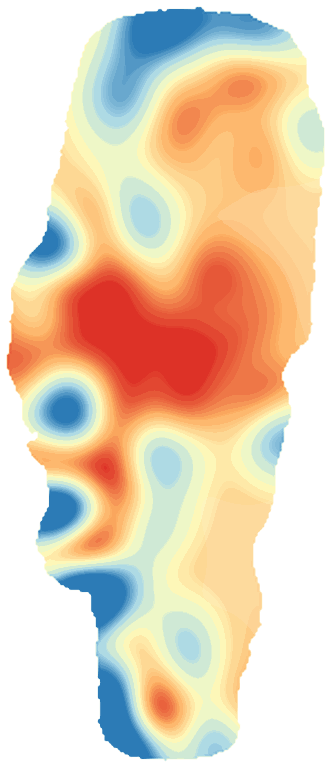

LakeScope › UT
Bear Lake today
Updated 2026-11-26 - Atlas Labs
Some algae possible, 43°F water, level steady, 5 ft below normal, calm this morning.
Water level
5918.39 ft
USGS gauge 10055000 - 2026-11-26
7-day trend: steady (-0.03 ft). Compared with normal for this date: -4.6 ft (same weeks, 2019-2025).
Water clarity and algae
Some algae possible Last clear view: over a week ago. 2 cloudy passes since.
Surface temperature
43°F
seen from space on 2026-11-22

Ice
Open - 0% ice cover
Estimate from weather and satellite, not a measurement. Check the ice yourself before going on it.
Weather, next 3 days
| Day | Sky | High / low | Wind | Rain |
|---|---|---|---|---|
| Thursday | Mostly Sunny | 45 / 35°F | 3 mph E | 0% |
| Friday | Mostly Cloudy then Chance Light Rain | 46 / 38°F | 7 mph SW | 45% |
| Saturday | Rain And Snow Likely | 43 / 30°F | 23 mph W | 64% |
Sunrise 07:28 - sunset 16:56 - Full moon. National Weather Service.